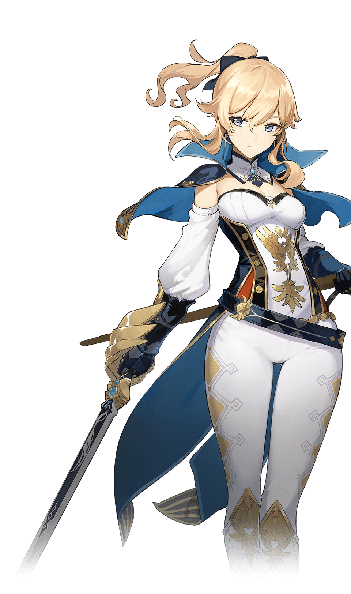

Jean

Jean Gunnhildr es la Gran Maestra Intendente de los Caballeros de Favonius, siempre se ha dedicado religiosamente a sus tareas dentro de la orden y al mantenimiento de la paz en Mondstadt. A pesar de no tener grandes talentos, su gran diligencia la han convertido en uno de los miembros con más influencia. Cuando Stormterror amenaza la ciudad, toma medidas rápidamente y protege Mondstadt con todas sus fuerzas.
Personalidad
Como Gran Maestra en funciones de los Caballeros, Jean se toma en serio todas sus responsabilidades y deberes asociados con el papel, independientemente de lo triviales que puedan parecer las tareas, como encontrar un gato perdido. Debido a esto, Jean a menudo se agota tratando de completar encargos de los lugareños, para gran preocupación de sus compañeros.
Apariencia
Jean tiene una complexión alta, atlética y piel clara. Ella tiene ojos azul grisáceo y cabello rubio dorado de longitud media recogido en una cola de caballo con un lazo negro. En sus orejas, lleva un par de pendientes de cruz de oro.
Viste una camisa sin tirantes blanca, azul, negra y roja con un símbolo dorado y forros junto con un frac largo azul adjunto, un par de mangas blancas separadas, una capa corta azul y dorada con un forro interior azul claro unido a un cuello blanco separado con forros negros, medias blancas bordadas con un patrón de puntos de diamantes dorados y un par de botas blancas de tacón alto hasta la rodilla con patrones dorados y tacones negros. Ella también usa un par de guanteletes azules.